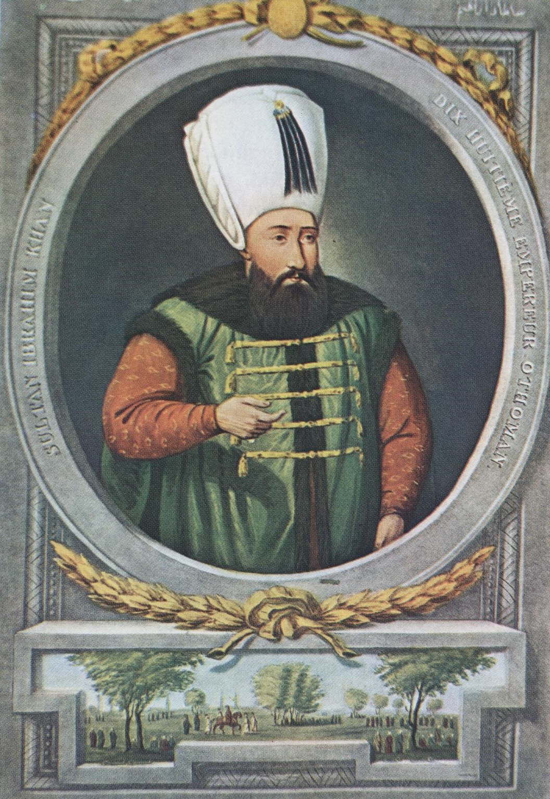

| önceki |  |
sonraki |
I. İbrahim, Osmanlı İmparatorluğu'nun on sekizinci padişahıdır. Babası I. Ahmed, annesi Kösem Mahpeyker Sultan'dır. Ağabeyi IV. Murad'ın vefatı anında hanedanın hayatta kalan tek erkek şehzadesidir; tahta geçmesiyle Osmanlı hanedanının soyunun tükenmesi engellenmiştir. Ağabeyinin korkusuyla kafeste geçirdiği uzun ve tecrit dolu yıllar sebebiyle asabi buhranlar yaşamıştır.
Saltanatı ve Dönemin Olayları
- Girit Seferi'nin Başlaması (1645): Malta şövalyelerinin Osmanlı gemilerine saldırması üzerine Venedik kontrolündeki Girit Adası'na büyük bir çıkarma yapılmış, Hanya Kalesi fethedilmiştir. Bu sefer, tam 24 yıl sürecek olan çetin bir deniz mücadelesinin başlangıcı olmuştur.
- Mali Kriz ve İsyan: Saltanatının sonlarına doğru saray harcamalarının artması, samur kürkü vergisi gibi fevkalade vergiler konması ve veziriazamların liyakatsizliği ordu ve ulemada büyük hoşnutsuzluk yaratmıştır.
- Tahttan İndirilişi ve Katli: 1648 yılında yeniçeriler ve ulema, annesi Kösem Sultan'ın da desteğiyle saraya yürüyerek Sultan İbrahim'i tahttan indirmiş; yerine 6 yaşındaki oğlu IV. Mehmed'i geçirmiştir. İbrahim, kısa süre sonra kapatıldığı hücrede boğdurularak şehit edilmiştir.
- Hanedanın Devamı: Sultan İbrahim'in ardından tahta geçen üç sonraki padişah (IV. Mehmed, II. Süleyman, II. Ahmed) ve onların soyundan gelen tüm Osmanlı padişahları onun soyundan devam etmiştir.
Ailesi
- Eşleri:
- Turhan Hatice Vâlide Sultân (IV. Mehmed'in annesi)
- Saliha Dilaşub Vâlide Sultân (II. Süleyman'ın annesi)
- Hatice Muazzez Sultân (II. Ahmed'in annesi)
- Hümaşah Telli Haseki Sultân
- Ayşe Sultân
- Şivekar Sultân
- Erkek çocukları:
- IV. Mehmed (Avcı Mehmed) (1642 – 1693)
- II. Süleyman (1642 – 1691)
- II. Ahmed (1643 – 1695)
- Şehzade Cihangir (1646 – 1648)
- Şehzade Orhan (1643 – 1650)
- Şehzade Bayezid (1646 – 1647)
- Şehzade Selim (1644 – 1669)
- Şehzade Murad (1643 – 1644)
- Kız çocukları:
- Fatma Sultân
- Gevherhan Sultân
- Beyhan Sultân
- Atike Sultân
- Ayşe Sultân
- Ümmügülsüm Sultân
I. İbrahim hakkında daha fazla bilgi için buraya tıklayın.